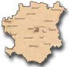

|
"First DOD CMM Level 3 Organization" Hacked By Doctor Nuker |

|
doctornuker@puckoff.com |
of the Chechen Republic, were shelled with special chemical bombs, which release clouds of inflammable gas creating massive blasts that incinerate buildings and people. 37 people have died, more than 200 people were injured and wounded as the result of this unhuman attack, forbidden by all possible International treaties. The first victims were 47 years old Marat Irischanov and his 15 years old daughter Zina. The number of victims is rising every minute. There was unusual yellow light, that could be seen throughout the city after the chemical attack by russians. --- This is a war Putin and Yeltsin dare not lose. Huge resources have been deployed - crack troops paid premium wages, high-tech equipment, total air and artillery superiority to achieve a "bloodless" victory - bloodless for the Russian army. It is the civilian population that is taking the heaviest casualties. However the budget of Russian Federation is unable to sustain a long and expensive high tech war in Chechnya. For Yeltsin and Putin the war is a desperate gamble - a throw on which they are staking all. Key parliamentary and presidential elections are looming. Putin, Boris Yeltsin's designated heir, hopes to guarantee the succession by a total victory over the Chechens. Russians are using barbaric weapons against civilians. Chechen cities (there are only three of them) and villages are being completely destroyed. Chechen nation faces the danger of being wiped out. In short, all relevant norms of international law are being violated by Russia. More precisely, there is genocide of Chechen nation. Unwillingly, one will come to the conclusion that the law of jungle governs Russian-Chechen relations and the West's attitude to them. Most ironic thing in this is that just recently the West, including the UN talked so much about the rights and freedoms of ethical minorities and upheld these rights in Kosovo and Estern Timor. Almost all of us were made to believe that at least international humanitarian law was superior to both the principle of sovereignty and the principle of non-intervention in ‘domestic’ affairs of a sovereign state. What is then so special about Chechens? Is a life of a Chechen child is somehow less worthy than a life of a child of other nation? Or do Chechens love their families, their women, their land, their beliefs less than other nations do? It's time to stop russian invasion into a foreign state and stop russian atrocities! It's time for the World Community to wake up! It's time to say to russians: "Ivan - Domoi!", which can be translated as "Ivan - Go Home!". If you are US resident, please write a letter to your Representative! You can also e-mail or call members of the Congress. For the visitors from other respected countries, please contact your local officials and urge them to use all political and economical pressure on Russia. respected among Chechens, which is a symbol of freedom and independence for them. |
|
Mr_Sweet , AntiChrist , Devil-C , p4riah , PS911 , ALOC , Forpaxe , McIntyre , pr1sm , exode , weLLfaRe , 139_r00ted , ne0h , subartic , HiP , Legion 2000 , Xessor , mistuh clean , lyp0x , Da^Bomb , mozy , k0ld , Deicidal , HIT2000 , spinkus , bl0w team , an0nym0us , un1x b0wl1ng t34m , ULG , cult_hero , LevelSeven , v00d00 , Hi-Tech Hate , gH , syxx , s0ften , analognet , punkis , [Narcissus] , The DDT , attrition.org , hackernews.com , packetstorm.securify.com , dutchthreat.org , projectgamma.com , net-security.org , zataz.com |